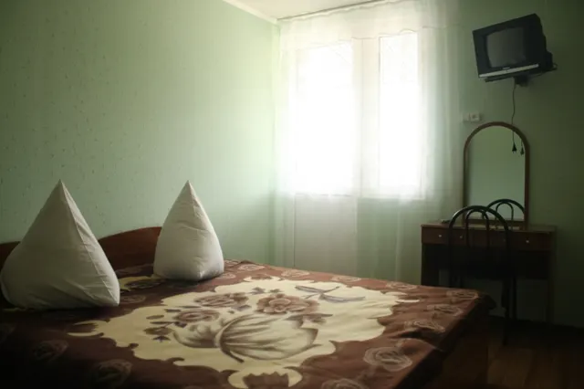

Сочи · Лазаревское · Марьинское шоссе
Гостевой дом «Горная фиалка» в Лазаревском
Тихий дом с бассейном на склоне у национального парка. Горный воздух, вид на море и горы, до пляжа — 20 минут пешком.
20 минутпешком до пляжа
7,3 мбассейн во дворе
5типов номеров и домик
14:00заезд, выезд до 12:00


Тишина, горный воздух и вид на Лазаревское
Дом стоит рядом с лесным национальным парком, вдали от шума машин и поездов. С террасы открывается панорама центра Лазаревского, моря и гор. Мимо проходит освещённое шоссе с тротуаром, остановка автобуса — у дома, продуктовый магазин — в минуте.
БассейнВид на море и горыWi‑FiПарковкаВстреча на вокзале
Номера

«Стандарт»
Двуспальная кровать, санузел и душ в номере, туалетный и журнальный столики.
2 гостя + доп. место15 м²Душ в номереКондиционер
от 800 ₽ за сутки

«Домик»
Отдельный домик: односпальные кровати и кресло-кровать, свой санузел с душем.
3 гостя + доп. место20 м²Душ в домикеКондиционер
от 1 100 ₽ за сутки

«Эконом +»
Уютный номер, санузел с душем — на два номера.
2 гостя10–11 м²КондиционерТелевизор
от 600 ₽ за сутки
Спросите о свободных датах — ответим и подберём номер
Сочи, Лазаревское, Марьинское шоссе, 64А · 20–25 минут пешком до пляжа